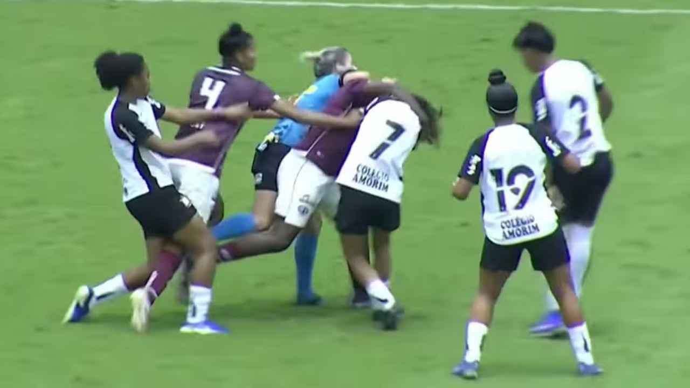

Corinthians
Ferroviária vence o Corinthians, garante título do Paulista Feminino Sub-20 e partida termina em briga
15/11/2026 às 23:49 (horário de Cuiabá)

A Ferroviária sagrou-se tricampeã invicta do Campeonato Paulista Feminino Sub-20 ao vencer o Corinthians por 2 a 0 neste domingo, na Arena Fonte Luminosa, em Araraquara. A atacante Gabi Pusch marcou os dois gols do confronto no primeiro tempo, abrindo o placar logo no início e ampliando a vantagem na sequência. A equipe da capital paulista atuou em desvantagem numérica desde o primeiro tempo após a expulsão de Débora pelo segundo cartão amarelo.
A reta final da decisão ficou marcada por uma pancadaria generalizada a partir dos 31 minutos da segunda etapa, originada em uma dividida no meio-campo entre Miga, da Ferroviária, e Gabi Jordi, do Corinthians. A jogadora grená desferiu um pontapé contra a corinthiana, desencadeando troca de agressões entre as equipes. Durante o tumulto, a atleta Mel levou um soco de Miga, caiu desacordada ou sem reação imediata e necessitou de socorro médico em campo, enquanto outras atletas também relataram agressões.
Após cerca de seis a sete minutos de paralisação e uma reunião da arbitragem, Miga recebeu cartão vermelho, assim como a treinadora do Corinthians, Júlia Passero, e a reserva Emy. Em notas oficiais, a Federação Paulista de Futebol e o Corinthians repudiaram a violência física. O clube alvinegro manifestou repúdio formal às ações cometidas por Miga e declarou que tomará medidas desportivas e legais, incluindo o registro de boletim de ocorrência e representação perante a entidade estadual.